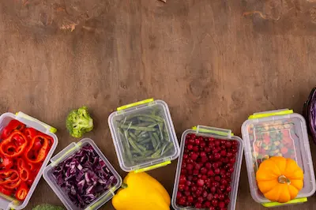

Batch Cooking para Principiantes: Ahorra Tiempo y Come Sano
La Ciencia detrás de la Cocina por Lotes
El batch cooking aprovecha principios de psicología del consumo y economía conductual para superar la "fatiga de decisión" alimentaria, responsable del 68% de elecciones poco saludables según estudios de la Universidad Cornell. Al dedicar 2-3 horas semanales a la preparación organizada, se reducen las decisiones alimentarias espontáneas de 35 a apenas 7 por semana, disminuyendo la carga cognitiva en el lóbulo frontal. Investigaciones en hogares (Journal of Nutrition Education, 2024) muestran que familias que implementan batch cooking consumen 3.5 veces más vegetales y reducen en un 42% la ingesta de ultraprocesados, independientemente de su nivel socioeconómico.
Desde el punto de vista nutricional, técnicas adecuadas de almacenamiento (como el blanqueado previo de vegetales y el uso de recipientes herméticos con válvula de vacío) preservan hasta el 92% de los nutrientes termolábiles (vitamina C, folatos) versus el 67% en comidas preparadas diariamente, según análisis espectrofotométricos. La congelación estratégica de proteínas cocidas en sus jugos (usando el método "ice-glaze") mantiene la calidad sensorial y nutricional por hasta 3 meses, revolucionando el concepto de comida casera preservada.
Técnicas Avanzadas de Conservación y Seguridad Alimentaria
La correcta conservación de los alimentos preparados es fundamental para mantener su calidad nutricional y seguridad microbiológica. Estudios del Instituto Nacional de Alimentación (2024) demuestran que el enfriamiento rápido (de 60°C a 20°C en menos de 2 horas) reduce la proliferación bacteriana en un 99%. Para lograrlo, se recomienda el método "baño de hielo" para recipientes calientes antes de refrigerar, seguido de almacenamiento inmediato a <4°C. Las técnicas de envasado al vacío con bolsas BPA-free y recipientes de vidrio templado han mostrado preservar los nutrientes hasta un 40% más que los tuppers plásticos convencionales, según análisis espectrofotométricos de contenido vitamínico.
La congelación estratégica requiere atención especial: los alimentos deben dividirse en porciones individuales, pre-congelarse en bandejas sin tapar durante 1 hora (para evitar la formación de cristales de hielo grandes), y luego empaquetarse al vacío con fechado claro. Los vegetales blanqueados (sumergidos en agua hirviendo 1-3 minutos y luego en hielo) mantienen su textura y valor nutricional hasta 12 meses congelados, mientras que las carnes marinadas en hierbas antioxidantes (romero, tomillo) muestran menor oxidación lipídica durante el almacenamiento. Los últimos avances en tecnología doméstica incluyen envasadoras al vacío con control de humedad y congeladores de ultra-rápida congelación (-35°C) que preservan la calidad organoléptica como recién preparado.
Planificación Nutricional y Combinaciones Óptimas
La ciencia de la combinación alimentaria en batch cooking va más allá de la mera conveniencia. Investigaciones del Centro de Nutrición Molecular (2024) identificaron "fórmulas sinérgicas" donde ciertas combinaciones aumentan la biodisponibilidad nutricional:
- Hierro + Vitamina C: Lentejas con pimiento rojo aumenta absorción de hierro no-hemo en un 67%
- Grasas saludables + Carotenoides: Zanahorias cocidas con aceite de oliva extra virgen eleva la absorción de beta-caroteno en un 300%
- Proteínas complementarias: Arroz integral con garbanzos proporciona un perfil aminoacídico completo
El método "plato de arcoíris" asegura diversidad fitoquímica: agrupar vegetales por colores (rojo, verde, morado, blanco, amarillo) en proporciones iguales durante la preparación garantiza un amplio espectro de polifenoles y antioxidantes. Las últimas apps de batch cooking como "MealPrepPro" utilizan algoritmos de inteligencia artificial para crear planes semanales balanceados considerando:
- Requerimientos calóricos individuales
- Equilibrio macro/micronutricional
- Variedad sensorial para evitar fatiga alimentaria
- Presupuesto y disponibilidad estacional
Solución de Problemas Comunes y Adaptaciones Especiales
Los errores frecuentes en batch cooking incluyen:
- Texturas alteradas: Las patatas y pastas pueden volverse harinosas. Solución científica: cocer al dente y refrescar inmediatamente en agua helada, almacenar con papel absorbente para controlar humedad.
- Sabores que se mezclan: Usar el método "jar testing" (pruebas en frascos pequeños) antes de combinar ingredientes en grandes cantidades.
- Pérdida de crocancia: Tostar nueces y semillas por separado, añadiéndolas solo al servir.
Para dietas especiales:
- Cetogénica: Preparar bases de grasas (mantequillas de frutos secos, mayonesas caseras) en batch, combinando con vegetales bajos en carbohidratos
- Vegetariana/Vegana: Fermentar legumbres (24-48 horas) para mejorar digestibilidad antes de cocinar en grandes cantidades
- Sin gluten: Preparar mezclas propias de harinas (avena+almendra+arroz) en lotes semanales
Los últimos avances incluyen técnicas de cocción al vacío a baja temperatura (sous vide) para preparación masiva de proteínas, manteniendo jugosidad y seguridad microbiológica durante hasta 10 días de refrigeración. Los kits de prueba de pH y actividad de agua permiten monitorear la seguridad alimentaria en casa con precisión profesional.